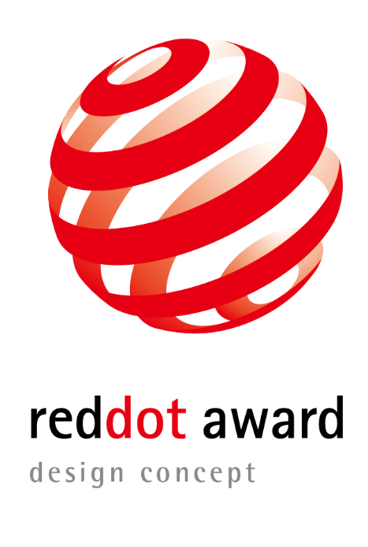
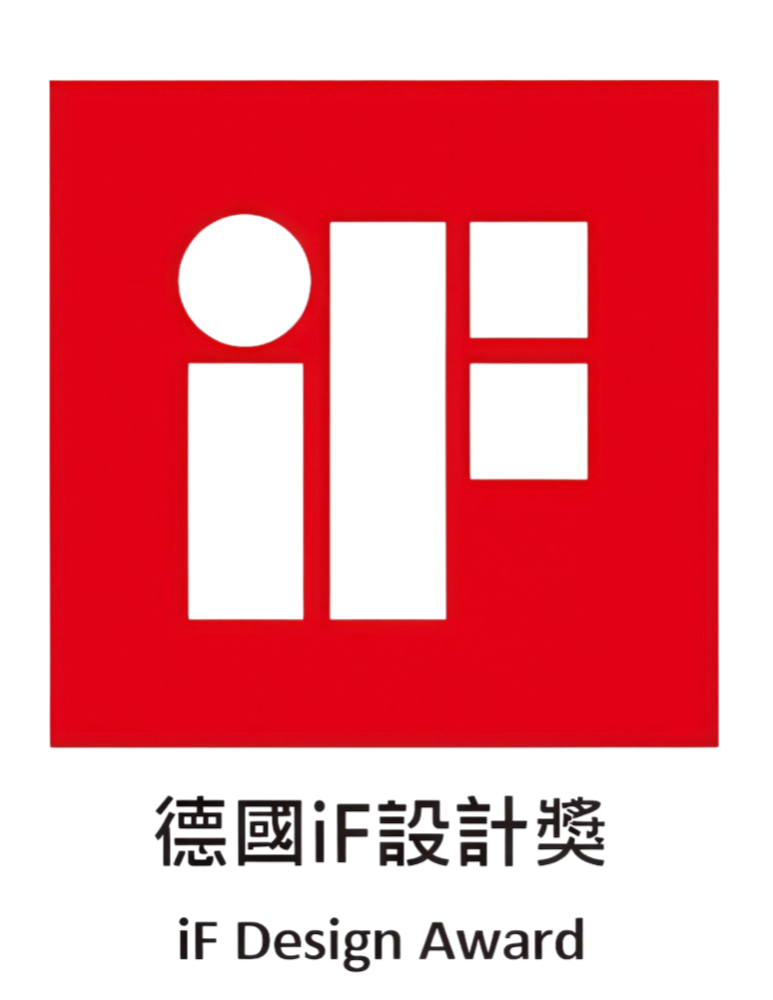
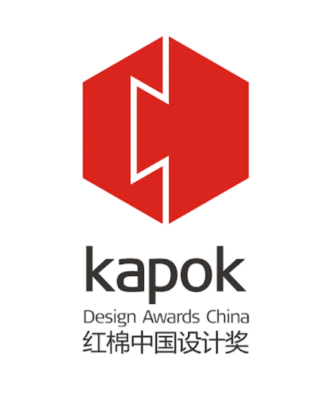

Our Commitment
從鈦材來源到成品檢驗，我們以公開透明的方式呈現每項品質數據。透過完整檢測與品質驗證，守護鈦壺的純淨特性，讓每一次沏茶都回歸最純粹的本質。
高純度鈦材打造，安全安心。
手工修整，講究每處細節。
第三方檢驗報告公開透明。
保留水質本味與茶香層次。
抗腐蝕耐高溫，歷久彌新。
International Awards

被譽為「國際工業設計的奧斯卡」，是全球最具影響力的設計獎項之一。

創立於 1953 年，以「獨立、嚴謹、可靠」的評選標準，表彰全球優秀設計作品。

榮獲多項中國設計獎項肯定，展現博友製鈦在設計創新與工藝品質上的卓越表現。
Certifications
通過德國、美國與瑞士等權威機構檢驗，守護每一次入口的安心。
Milestones
持續研發「鈦養生壺」系列，推出望月、小滿、春曉、暗香、如意、觀山、回紋等經典壺器系列。
「微晶鈦筷」榮獲輕工業創新消費品獎，並登上 CCTV 宣傳推廣。
「鈦鮮杯」獲創新獎；研發微晶鈦筷技術，並於 CCTV 播出推廣。
榮獲紅棉中國設計獎、德國紅點設計獎與德國 iF 設計獎；研發鈦內膽真空杯 HMF 焊接技術（專利號 ZL 2016 2 1324953.4）。
「鈦複合鍋」獲創新獎（專利號 ZL 2016 2 0228045.9）；建立嚴格生產標準，通過德國 LFGB、美國 FDA、瑞士 SGS 認證。
與瀋陽工業大學策略合作，並與廣州美術學院展開產品美學設計合作。
成立鈦製品技術研究院。
創立「博友」品牌，投入金屬創意生活用品領域。